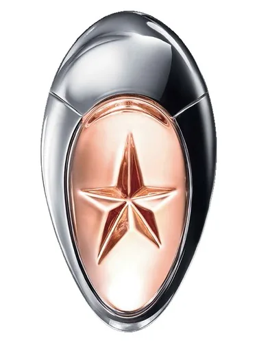

Angel Muse
- Para mujer
- Familia amaderada
- Lanzado en 2016
Con caja$1,850Te lo conseguimos en 2 días a 1 semanaSin caja$850Te lo conseguimos en 2 días a 1 semana
No disponible: te lo conseguimos en 2 días a 1 semana
Cómo huele
Amaderado
Pachulí
Dulce
Terroso
A frutos secos
Sus notas
Salida
pimienta rosatoronja
Corazón
crema de cacao y avellanas
Fondo
pachulívetiver
Angel Muse de Mugler es un perfume amaderado para mujer, lanzado en 2016. Abre con pimienta rosa y toronja, en el corazón tiene crema de cacao y avellanas y deja un fondo de pachulí y vetiver. Lo que más se siente: amaderado, pachulí y dulce.